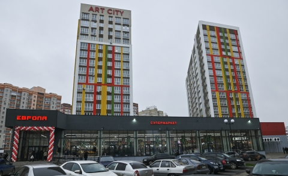

Новости Торговой сети Европа

В Брянске открылся супермаркет «Европа»Новый магазин расположился по адресу ул. Горбатова, д. 18, неподалёку от школы №71. В новом микрорайоне 10 ноября открылся супермаркет «Европа». Это 58-й магазин торговой сети в России и третий в Брянске. Его торговая площадь – 1000 квадратных метров. На полках – более 18 тыс. различных видов товаров по низким ценам.
Подробнее...
В магазине представлена линейка товаров собственной торговой марки «Европа» (молоко, творог, крупы, зубная паста, детское питание и др.) и продукция собственного производства (выпечка, салаты, мясо, гамбургеры, донеры и др.), а также продукция под маркой «Правильное питание». В супермаркете работает собственная пекарня компании. Традиционно представлен широкий выбор свежих фруктов и овощей, ягод и зелени. Особое внимание местным производителям, а главное – брянским фермерам.
Test Lab. Дегустация товаров собственной торговой марки Европа21.10.22 стартовал наш проект TEST Lab, который проходил в формате сравнительной дегустации продуктов СТМ «Европа» с аналогичными товарами других торговых марок.
Подробнее...
Все участники попробовали и оценили представленные образцы по нескольким критериям, и нас очень радует, что по итогам тестирования лучшими были признаны товары под брендом «Европа». Этот выбор доказывает, что мы тщательно отбираем и контролируем свой продукт. Все пришедшие «эксперты» сошлись во мнении, что TEST Lab это очень интересное мероприятие, и мы благодарим Вас за честные отзывы, первые впечатления и бесценное живое общение. Работаем для Вас дальше, лучше и ещё вкуснее!
 Иностранные бренды возвращаются в Курск
Иностранные бренды возвращаются в КурскФирменные вещи польских фэшн-ретейлеров LPP и ССС снова можно приобрести в Central Park. В марте многие западные бренды приостановили работу в России. Сейчас некоторые компании возвращаются, но с новыми вывесками.
Подробнее...
Как пишет «Фонтанка», торговые точки польской компании LPP (управляет брендами Reserved, House, Cropp, Mohito, Sinsay), 19 мая заявившей о продаже российского бизнеса китайскому консорциуму, вновь заработали в Петербурге. – Магазины польского фэшн-ретейлера LPP после двух месяцев простоя начали открываться под новыми вывесками. На очереди – Reebok и L'Occitane. Mango, Zara, Uniqlo, H&M, – сообщило издание. Malls.ru написал, что в российском подразделении LPP Group заявили, что магазины начинают открываться с заменой прежних вывесок на временные с новыми логотипами. В московском офисе рассказали, что вместо Sinsay будет использоваться «Син», вместо Reserved – Re, в то время как бренд Cropp будет заменен на Cr, Mohito – на M, а House – на XC.
В Курске «Европа-1» отметила 25 летНа проспекте Кулакова прошёл большой праздник в честь юбилея магазина. Розыгрыши, призы, ярмарка, детский праздник и концерт под открытым небом. В первый день лета на проспекте Кулакова отметили день рождения магазина «Европа-1».
Подробнее...
Сотрудники торговой сети и покупатели вместе танцевали под музыку кавер-группы GUCCI BAND и вспоминали, как 25 лет назад в Курск пришла современная европейская торговля. «Европа» «красная» Старый магазин «Культтовары» на проспекте Кулакова, 43 не работал около года, и владельцы объявили о его продаже. В 1997 году за собственные и кредитные средства его приобрела компания «Промресурс». Скоро на месте полузаброшенного здания открылся первый магазин «Европа». Для Курска это стало настоящим событием.
ФАС проверила цены в курском магазине «Европа»Ведомство не нашло нарушений, подорожание продуктов в торговой сети объяснили закупочными ценами, которые подняли поставщики. Представители УФАС России по Курской области посетили магазин региональной торговой сети «Европа» на улице Студенческой.
Подробнее...
Об итогах проверки сообщила пресс-служба администрации Курской области. По поручению первого заместителя председателя правительства РФ Андрея Белоусова УФАС проверяет участников рынка: производителей, поставщиков, магазины. Сегодня особое внимание – полкам с сахаром, крупами и другими социально значимыми товарами. Прилавки не пустуют, сбоев в поставках в магазине «Европа» на улице Студенческой не было. Представитель УФАС ознакомился с накладными. По документам надбавки на товары при цене поставщика минимальные – до 10%, на сахар и крупы – до 5%. Директор магазина отметила, что из-за повышенного спроса они скорректировали объёмы поставок, так же было и в пандемию.